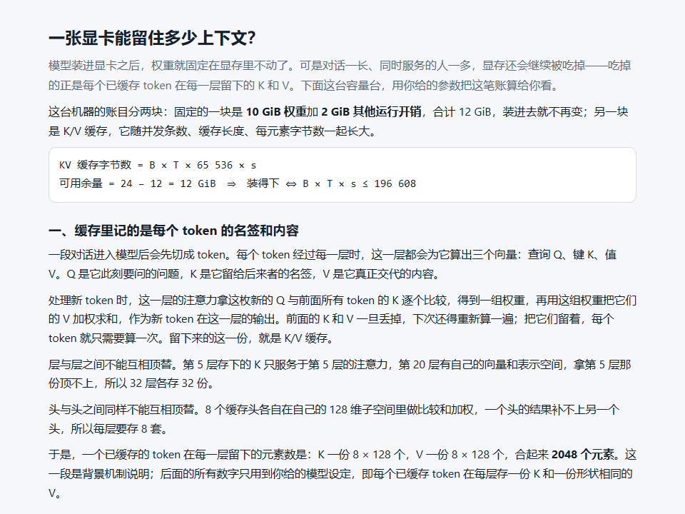
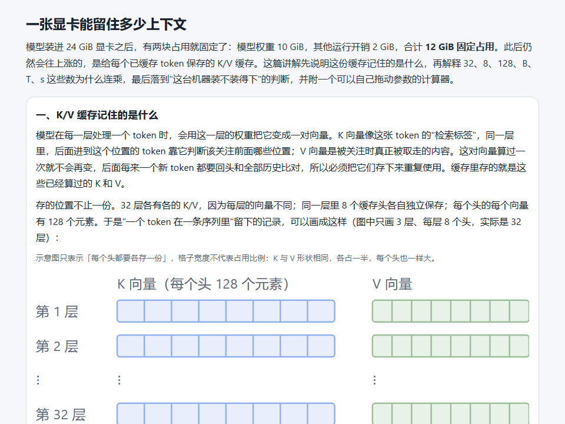
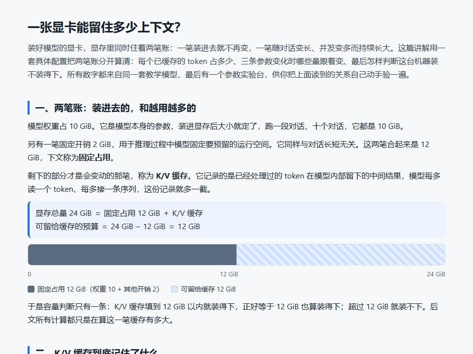
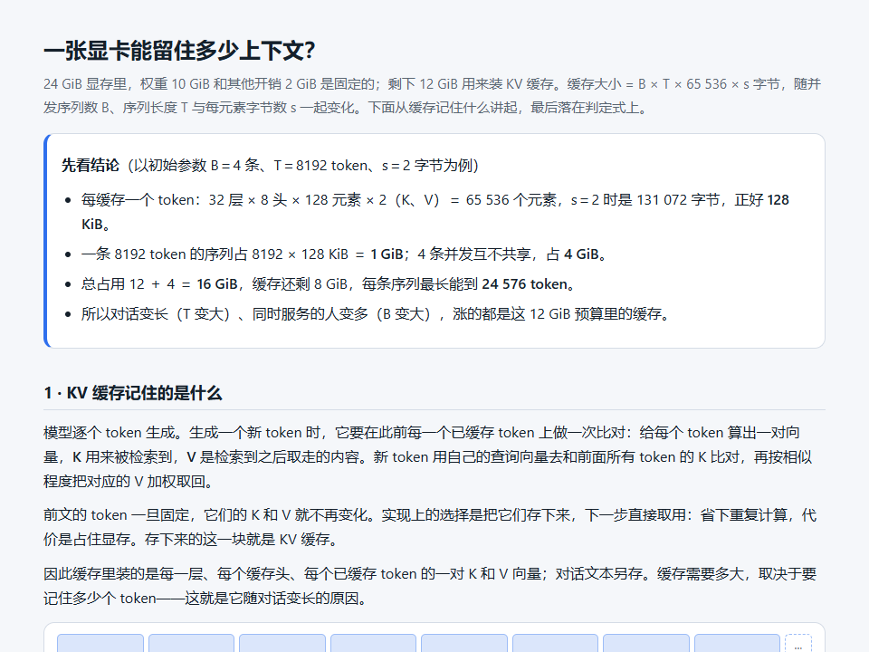
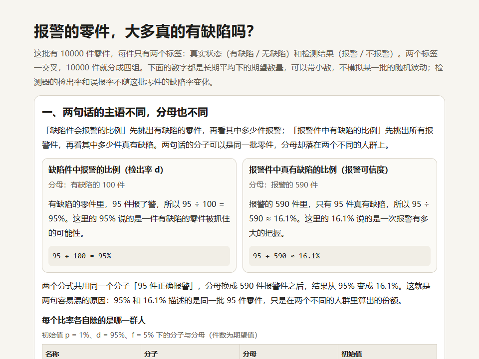
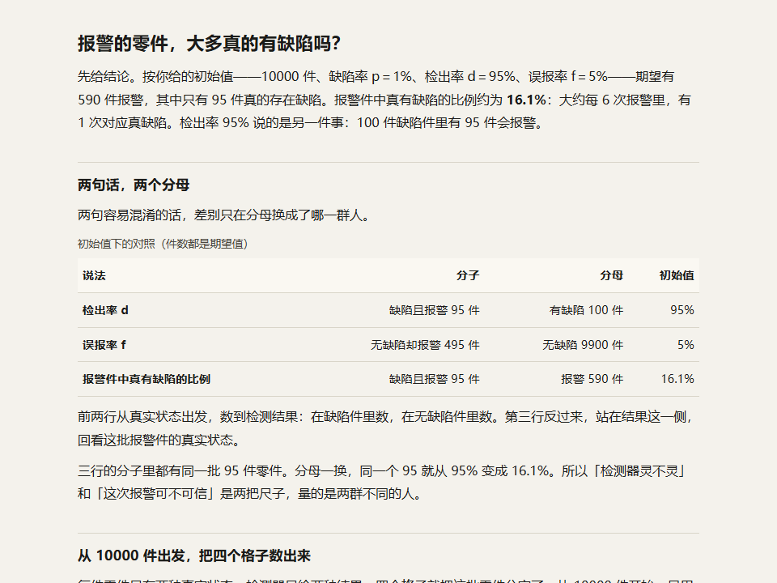
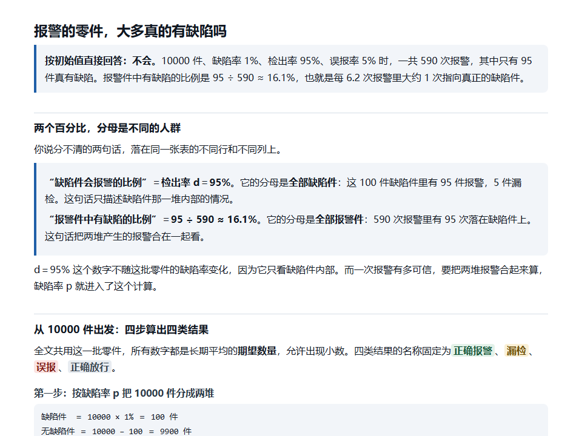
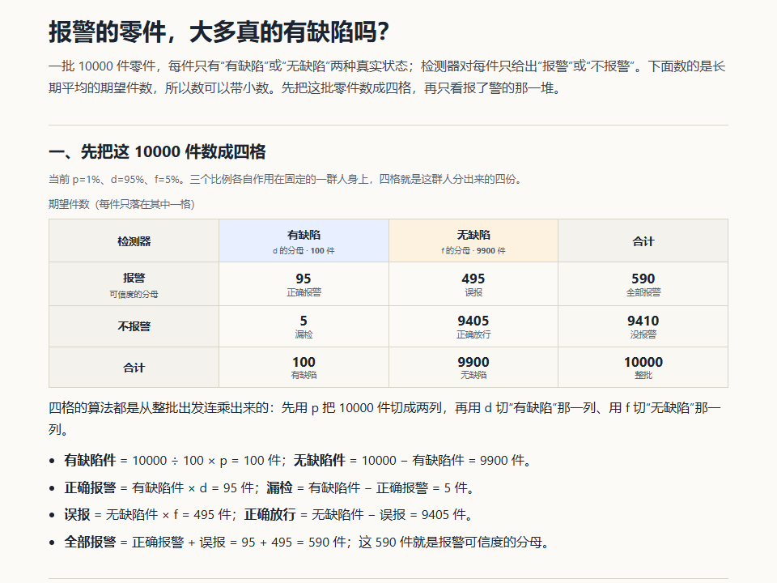
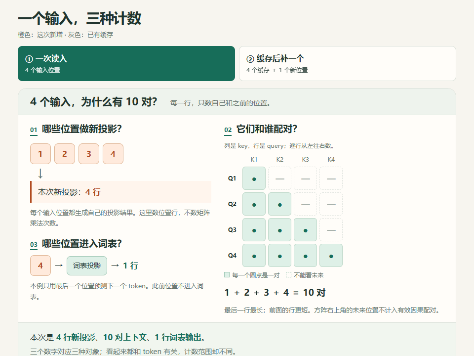

旧组 · 现有方法库
已首次交付 · 方法读取 0 次 · 14 次模型调用

打开完整交互页 ↗逐页看真实交付。两组使用相同模型和生成流程，新组只增加方法库资产；这些实验页没有经过人工改稿。
观察到局部设计差异，也发现了计算之外的文字和交互问题。方法目录被看到，不等于教师示范被读取或采用；完整结论以实验报告和调用记录为准。
旧组先铺完整文字推导；新组更早画出每层、每个头的 K/V 存储。两页都存在容量边界或解释文字问题。新组没有读取教师作品，不能将这次局部改善归因为示范迁移。
已首次交付 · 方法读取 0 次 · 14 次模型调用

打开完整交互页 ↗已首次交付 · 方法读取 0 次 · 21 次模型调用

打开完整交互页 ↗重复运行显示另一种取舍：旧组先画固定占用与缓存预算；新组提供精确长度输入。具体计算、操作与边界发现见完整报告。
已首次交付 · 方法读取 0 次 · 21 次模型调用

打开完整交互页 ↗已首次交付 · 方法读取 0 次 · 17 次模型调用

打开完整交互页 ↗旧组把 95/100 与 95/590 并排解释；新组先交代四类数量再进入操作。两组各有静态讲解错误，新组部分按钮还会重置未在名称中说明的参数。
已首次交付 · 方法读取 0 次 · 20 次模型调用

打开完整交互页 ↗已首次交付 · 方法读取 0 次 · 14 次模型调用

打开完整交互页 ↗第二次独立生成，两页核心计算仍正确。旧组“减半”按钮实际是固定预设；新组“只改”按钮会重置其他参数，部分文字没有随状态变化。图、数字、讲解和操作需要共同一致。
已首次交付 · 方法读取 0 次 · 11 次模型调用

打开完整交互页 ↗已首次交付 · 方法读取 0 次 · 16 次模型调用

打开完整交互页 ↗这是独立制作、加入候选方法的教学作品，不是新组生成的页面。用可数的对象解释 4 行投影、10 个配对、1 行输出，切换时让对象和数字一起变化。
